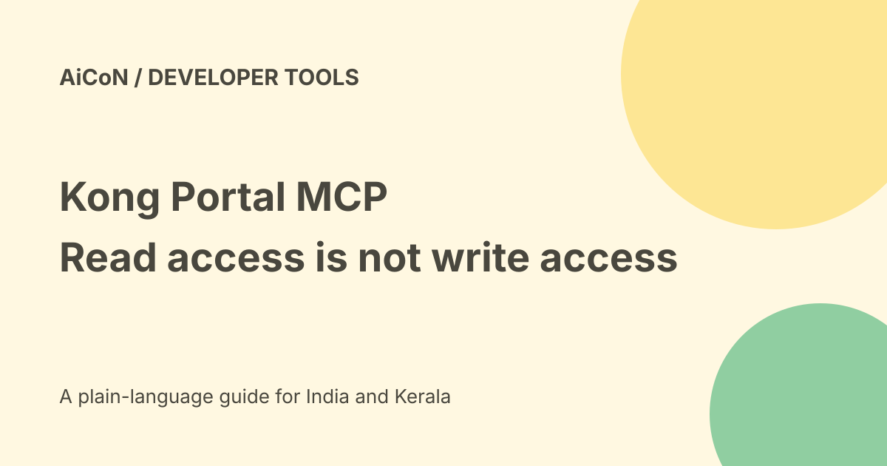

Kong Portal MCP: OAuth, documentation and write-access limits
Scoped recheck: 24 October 2026. Official documentation, pricing and privacy review; no account, setup, install, recording or payment test.
Kong’s Portal MCP Server exposes published Dev Portal documentation to compatible agents under the developer’s access permissions. Current docs also describe optional application/registration writes. This is different from editing and publishing portal pages through the separate Konnect MCP Server.

What does Portal MCP replace?
An agent otherwise may scrape HTML or guess where API information lives. The dedicated per-portal server gives it a structured route to published pages and specifications.
Structured access can reduce guessing, but the documentation can still be stale or wrong. Check the actual API version, permissions and response before building around an example.
Anonymous and authenticated access
Current docs describe three modes: public read-only when portal login is disabled; authenticated read-only when login is enabled but writes are off; and authenticated read-write when both login and write operations are enabled. With portal login enabled, an agent must authenticate even for otherwise-public content. It can see restricted pages/specifications only if its developer already can. These are documented rules, not independent allowed/disallowed-account tests.
The post says drafts and restricted documentation remain hidden from unauthorised people. These are product rules, not an independent permission test performed here. Check with both an allowed account and a disallowed account before publishing private docs.
OAuth with PKCE
The announcement describes OAuth 2.0 Authorization Code flow with PKCE. The developer logs in and consents, while portal administrators control trusted clients and allowed dynamic-registration redirect URLs.
Consent connects an account. It does not mean every future disclosure or write is appropriate. Inspect the client, scope, redirect destination and the actual task before authorising access.
Markdown is another route
Kong says portal pages can be fetched as Markdown through an Accept: text/markdown header or a .md suffix. This is a readable version of the same content.
Markdown does not create new permissions or make external text safe to execute. Treat instructions in documentation as reference material, not authority to run unrelated commands or disclose credentials.
Read tools versus write tools
Portal MCP itself can optionally create, update and delete applications and create/delete API application registrations on the developer’s behalf. This is not a promise of documentation-publishing rights. Its tool table includes delete operations even though the prose summary emphasises create/update. Keep write operations disabled for documentation-only use. The developer must separately generate application credentials; the agent cannot generate them through these Portal tools.
Creating an application or discovering its API specification does not authorize an actual API call. Use a secure credential route and narrow service permissions if that separate task is approved. Do not paste persistent secrets into chat or documentation.
The separate Konnect MCP Server creates, edits and publishes pages, snippets and Markdown Components and can manage wider API infrastructure. Current docs offer browser sign-in for some clients as well as PAT/SPAT authentication under role permissions. Its access is enabled by default at organisation level unless an admin disables it. A documentation-reading connection and a broad infrastructure-management connection have different effects.
Those writes are governed by PAT/SPAT permissions. A personal or system token with broad access can change public content. Keep credentials out of prompts, use narrow permissions and review the exact destination and text before publishing.
Opt-in and plan questions
Current docs separate AI Settings, MCP Server and optional write-operation switches. AI Settings alone offers opening documentation in supported LLM clients; it does not create an MCP server or grant its tools. Enable and save only the switches needed for the approved task. Some clients block non-custom *.kongportals.com domains; a custom domain can matter. No portal was enabled or modified here.
The current pricing page has Plus/Enterprise and usage-based portal/API limits, not a verified universally free Portal MCP entitlement. Its rate card lists included portals/APIs and extra charges, but the page also mixes custom annual offers and older calendar-month billing FAQs. Get the plan/order form and actual usage total for your organisation. No final India price, checkout, free allowance or feature entitlement was tested.
No actual Konnect plan, final INR price or free allowance was verified. Check current subscription and administrator settings before promising that your team can enable it.
A careful setup test
- Identify the exact portal and owner.
- Check current AI-feature availability and policy.
- Choose a read-only documentation task first.
- Review the OAuth client and requested permissions.
- Use a harmless public page to test discovery.
- Check a private page with permitted and unpermitted access.
- Confirm that drafts are not exposed.
- Keep write tools and tokens separate from read needs.
- Review changes before publishing and test the result.
- Remove unused connections.
API specifications need validation
An agent can produce plausible code from the wrong endpoint or version. Validate the schema, authentication, rate limits and error handling against the actual service.
Documentation access is not permission to send live customer data, perform a payment or mutate a production database. Use harmless tests and the right approval process.
India and practical limits
Current Konnect MCP documentation lists a global endpoint and regional endpoints including India. This is a documented service endpoint, not a guarantee that every client, AI provider or connected API keeps all processing in India. Confirm the exact product, regional configuration, account rights and data path. No portal toggle, OAuth session, token, API call, page or billing setting was changed.
Compatible agent examples are vendor-listed, not a claim that every current Claude, Cursor or VS Code account can connect without extra setup.
What changed since the original post?
The 24 October scoped recheck corrects the earlier Portal-read-only shorthand: Portal can optionally write application/registration state, while content publishing remains separate Konnect MCP work. It adds login-enabled public-content authentication, separate credentials and switch requirements, current Konnect auth options and plan uncertainty. Original 7 October publication retained.
Frequently asked questions
Does Portal MCP grant publishing rights?
Not documentation-publishing rights from Portal access alone. Optional Portal writes manage applications/registrations; page editing and publishing are described under separate Konnect MCP permissions.
Can anonymous agents read private drafts?
Kong says existing restrictions remain. Test your actual portal's rules.
Was a portal enabled?
No.
Sources: Official Portal MCP announcement. Checked 7 October 2026.
Scoped recheck: current Portal modes, tools and switches · separate Konnect content writes, authentication and regions · plan and portal/API usage limits. Checked 24 October 2026. Source claims, not a hands-on account or deployment test.